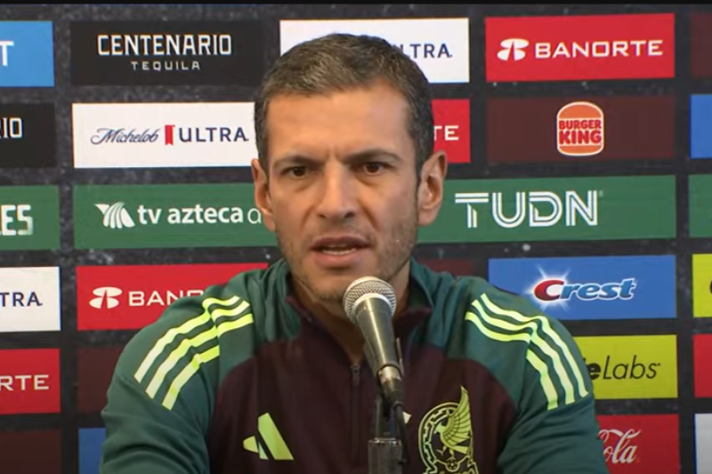

Huracan Alberto.
Huracan Alberto tocarar tierra en méxico , Huracan de categoria 4, todo sobre los daños que causara.
LEER MASS

Seleccion Mexicana
Se quedara el jimmy lozano como director tecnico de la selección ?, los directivos han dado su respuesta.
LEER MASJuegos Olimpicos Paris 2024
Todo mundo a la espera de Los juegos Olimpicos de Pris , quien dominara el Medallero .
LEER MASClima lluvioso En todo Mexico
Tormeta tropical se citua a lo largo de la republica Mexicana tras la disolucion de dos Huracanes .
LEER MASFuertes Inundaciones
El sistema de drenaje colapsado en Mexico , presas llenas y mas por la tormeta tropical que asota Mexoco .
LEER MAS